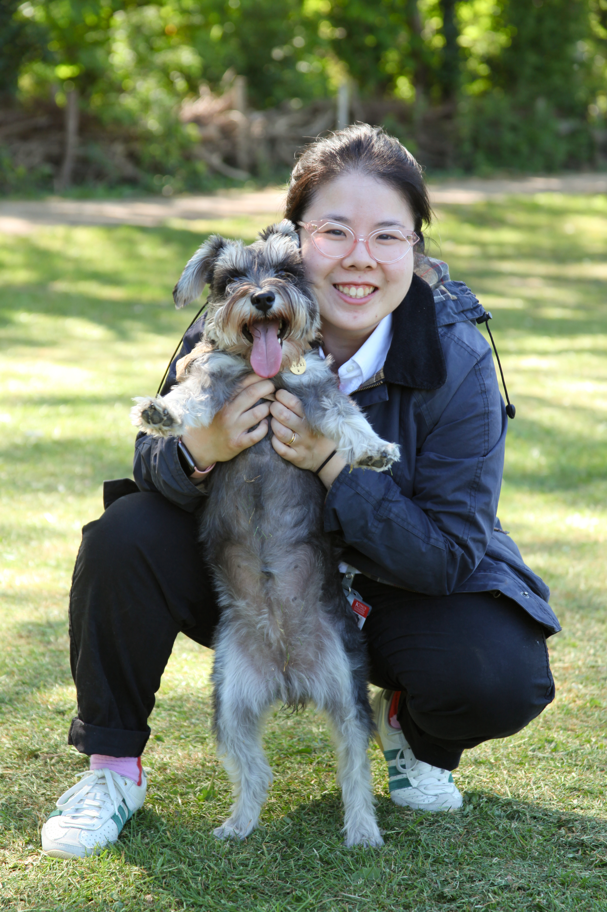

Teaching Fellow · Algorithms · Theoretical Computer Science
Zara Lim,
PhD
About

I am a Teaching Fellow at King's College London, and module leader for Introduction to Computer Science on the King's International Foundation (KIF) programme.
My doctoral work focused on efficient approximate pattern matching algorithms for strings and graphs; these techniques have various interdisciplinary applications such as biology or music. I am open to explore new research collaborations, particularly anything related to bioinformatics, or computer science education. Please get in touch if you want to chat about anything!
Outside of work, I enjoy playing videogames (current favourite: Clair Obscur: Expedition 33)
Research Interests: Combinatorics, Algorithms, Stringology, Graphology, Bioinformatics, Computer Science Education
Erdös Number: 3
Education
- 2021-2026 Bioinformatics PhD, King's College London Supervisors: C.S. Iliopoulos, C. Hampson, P. McBurney
- 2016-2020 Electronic Engineering MEng, King's College London
Selected Publications
2025
- . Finding the Cyclic Covers of a String. Information Processing Letters (IPL), 2025.
2024
- . Deep learning Approaches and Data Augmentation for Melanoma Detection. Neural Computing and Applications., 2024.
- . Pattern Matching in Polyphonic Musical Sequences. IFIP International Conference on Artificial Intelligence Applications and Innovations (AIAI), 2024.
- . IRFold: An RNA Secondary Structure Prediction Approach. IFIP International Conference on Artificial Intelligence Applications and Innovations (AIAI), 2024.
2023
- . Maximal Degenerate Palindromes with Gaps and Mismatches. Foundational Methods in Systems Biology Special Issue of Theoretical Computer Science, 2023.
- . MUL-Tree Pruning for Consistency and Compatibility. 34th Annual Symposium on Combinatorial Pattern Matching (CPM), 2023.
- . Advanced Skin Cancer Detection Using Deep Learning. International Conference on Engineering Applications of Neural Networks (EANN) , 2023.
- . Local Maximal Equality Free Periodicities. International Conference on Artificial IFIP Intelligence Applications and Innovations (AIAI) , 2023.
- . Finding the Cyclic Covers of a String. International Conference and Workshops on Algorithms and Computation (WALCOM), 2023.
2020
- . Fluidic haptic interface for mechano-tactile feedback. IEEE Transactions on Haptics, 2020.
- . Hybrid fluidic actuation for a foam-based soft actuator. IEEE/RSJ International Conference on Intelligent Robots and Systems (IROS), 2023.
Teaching
- 0CCS0CSE Introduction to Computer Science Module leader · 2023–
- 6CCS3PRJ Final Year Project Co-supervisor · 2023-2024
- 6CCS3/7CCS4CIS Cryptography and Information Security Teaching Assistant · 2019–2023
- 6CCS3/7CCS4OME Optimisation Methods Teaching Assistant · 2019–2023
- 5CCS2FC2 Foundations of Computing Teaching Assistant · 2018–2023
- 5CCS2ELC Electronic Circuits Teaching Assistant · 2019–2020
- 5CCS2ENM Engineering Mathematics Teaching Assistant · 2018–2020
- 5CCS2PL2 Practical Engineering Lab 2 Teaching Assistant · 2018–2020
- 4CCS1CIT Circuit Theory Teaching Assistant · 2018–2020
I am currently unable to take any PhD students at this time.
Projects
-
Exact and Approximate Pattern Matching Algorithms for Bioinformatics and Beyond
-
Dominoes: Solving instances of the Post Correspondence Problem
-
Freestation 2.0
Hardware and Software development for a low cost local environmental data collection tool.
-
STIFF-ness controllable Flexible and Learn-able Manipulator for surgical OPerations
Explored the design and applications of soft robotics tools for minimally invasive laparoscopic surgery.
Awards
- 2023 Quality of Presentation, NMES Research Competition King's College London
- 2023 Outstanding Teaching Assistant Award King's College London, Department of Informatics
- 2022 Outstanding Teaching Assistant Award (Nominated) King's College London, Department of Informatics
- 2021 Outstanding Teaching Assistant Award (Nominated) King's College London, Department of Informatics
- 2020 King's Education Award King's College London, Department of Engineering
- 2020 KCLEA Medal King's College London, Department of Engineering
- 2020 Outstanding Teaching Assistant Award (Nominated) King's College London, Department of Informatics
- 2019 Outstanding Teaching Assistant Award King's College London, Department of Informatics
Contact
- Emailzara.t.lim@kcl.ac.uk
- OfficeDepartment of Informatics@King's College London, Bush House, 30 Aldwych, London, WC2B 4BG
- Google Scholarscholar profile
- ORCID0000-0001-6528-6060
- LinkedIn/in/zara-lim/